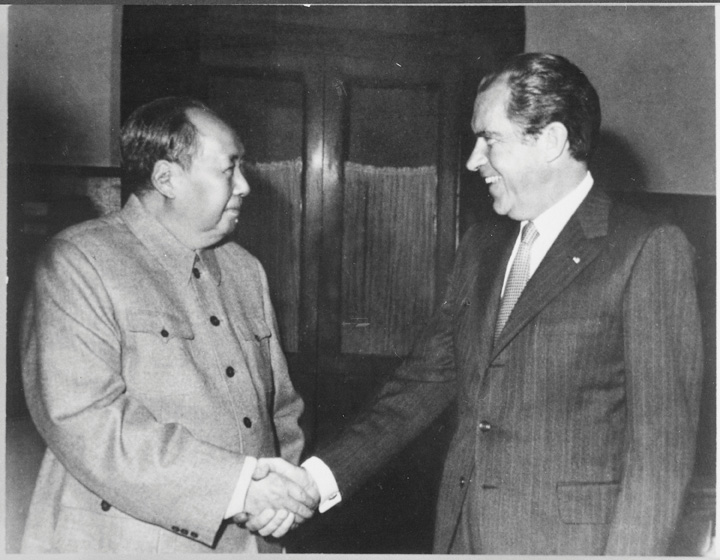
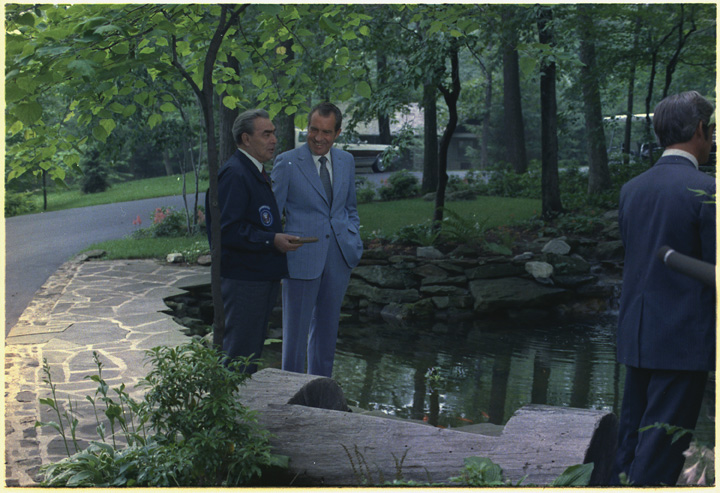
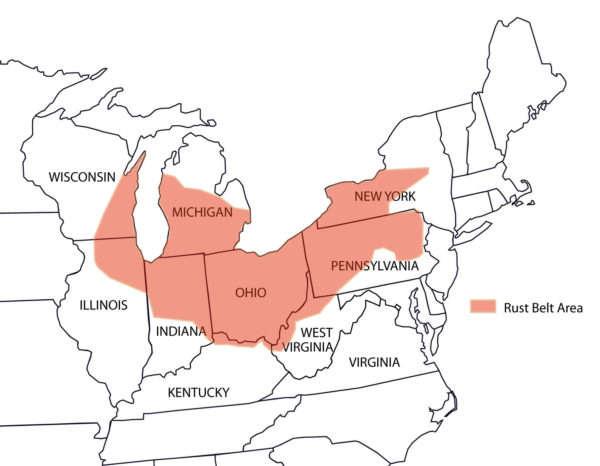
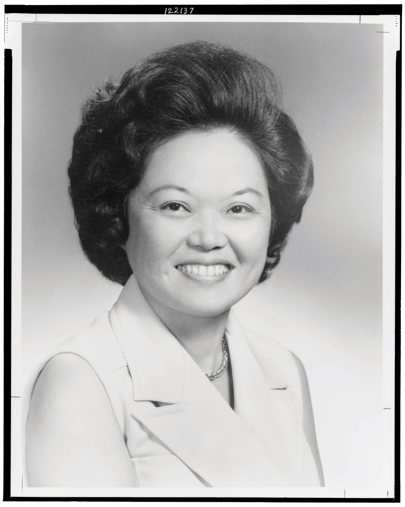

In the 1960s, the Organization of Petroleum Exporting Countries (OPEC)A cooperative formed in 1960 by oil-exporting nations whose members seek ways to maximize profits related to oil exports. OPEC demonstrated its power in the 1970s with a series of boycotts against the West that led to a severe energy crisis and increased price for oil. Most OPEC members are located in the Middle East, but other members include Venezuela, Angola, Nigeria, and Ecuador. was created as an economic alliance that hoped to work collectively to regulate the global oil market. Oil-producing nations such as Venezuela, Iran, Iraq, Kuwait, and Saudi Arabia believed that the tremendous postwar demand for oil did not match its price, which had remained fairly constant in real dollars for nearly a century. However, OPEC’s initial efforts to restrict production stumbled because these nations were so dependent on oil exports for their livelihood—the very factor that had kept supplies high and prices low. The only way to increase the price of oil, OPEC founders recognized, was to reverse the present power structure and make nations that imported oil dependent on the nations that produced oil, rather than the other way around. The challenge was to convince all oil-exporting nations, especially those of the predominantly Arabic Middle East, to restrict production simultaneously.
A failed invasion of Israel by several of oil-producing nations in 1973 spurred the unity OPEC leaders had been hoping for. In response to the West’s support of Israel in the Yom Kippur WarOctober 1973 invasion by Egypt and Syria of the Sinai Peninsula and Golan Heights along their disputed border with Israel. These territories were formerly held by Egypt and Syria, but had been occupied by Israel after Israel repelled a similar invasion in 1967. With Western aid, Israel once again defeated Egypt and Syria., OPEC’s Arabic member states voted to impose an embargo on the United States and Western Europe in October. The war itself was a continuation of the Israeli-Palestinian conflict, as Egypt and Syria reinvaded Israel in hopes of taking back territory it had lost in previous wars. The United States and Western Europe responded with military aid that assisted Israel in its successful defense. This Western intervention resulted in a coordinated effort by religious and secular leaders throughout the Arabic world to force the West to abandon Israel, with the method being the refusal to sell oil to any ally of Israel.
The embargo was not simply about ethnic and religious conflict. For many years, the members of OPEC and even the US-installed shah of Iran had complained that Western nations charged inflated prices for the food and manufactured goods they exported to the Middle East while the oil they purchased remained constant despite growing demand. These complaints were especially relevant in 1973 given recent inflation. The price of Western goods had doubled even as the price the West paid for oil remained about the same.
In the first two decades after World War II, Americans had grown accustomed to the idea that their nation dictated the economic, political, and military terms that other nations (outside of the Soviet sphere) abided by. The oil embargo challenged this confidence and caused an energy crisis that affected all Americans instantly. Fuel prices quadrupled after the start of the embargo in October 1973. An estimated one in five gas stations simply ran out of fuel altogether during the peak of the crisis the following spring. Recognizing that the gulf between supply and demand was so great that the price might continue its upward spiral, the government limited the amount of oil each state received and began printing fuel ration coupons similar to those used in World War II. Although the embargo ended before the federal rationing program took effect, states passed regulations limiting the number of days consumers could purchase fuel. For example, many states utilized a system where a digit in a consumer’s license plate determined what days they could purchase gasoline. Speed limits were reduced to fifty-five miles per hour or less, and even NASCAR reduced the distance of its races to conserve fuel.
Figure 12.8
Thousands of service stations simply ran out of fuel during the 1973 energy crisis, including this cleverly named service station.
The US economy was damaged but not disabled by the embargo because domestic oil production still accounted for 70 percent of the nation’s consumption in the early 1970s. In addition, domestic production quickly increased once price controls were released, permitting US oil companies to sell their product at market prices, which were substantially higher than the rate the government had set. However, many Western European nations depended almost entirely on the Middle East for oil. North Atlantic Treaty Organization (NATO) members were beginning to reconsider their relationship to Israel, demonstrating the limits of US authority over its own NATO allies. In response, the United States offered millions in aid payments to Israel in exchange for an agreement to withdraw from several areas that were claimed by its Arabic neighbors.
From the perspective of these Arabic nations, the embargo demonstrated that oil could be used to further political objectives. However, business and political leaders in Saudi Arabia and other nations were more impressed by the rapid increase in the price of oil. Saudi Arabia decided to resume sales to the West in the spring of 1974 to take advantage of the dramatic price increase. Other Arab nations likewise placed profits ahead of politics, easing the embargo on nations that still supported Israel. However, the price of oil remained near its 1973 highs because OPEC successfully restricted production and maintained the artificially high price after the initial embargo. Oil did not return to its pre-1973 price (adjusted for inflation) until the 1980s and 1990s when global production increased and the end of the Cold War promoted freer trade. During these later decades, OPEC struggled to dictate production quotas to its members, several of which were at war with one another and in desperate need of revenue.
Even as America dropped bombs on Communist-controlled areas of Southeast Asia, the Nixon administration was able to almost simultaneously reduce tensions with the Soviet Union and China. Critics of the Vietnam War questioned how the same government that had justified escalation in Vietnam as necessary to roll back Chinese and Soviet aggression could negotiate so freely with both nations while simultaneously requesting more military aid for South Vietnam. From the perspective of the Nixon administration, however, the increased tension between the Soviet Union and China presented an opportunity to drive a wedge in the heart of the Communist world. Others simply hoped diplomacy might be a step toward peaceful coexistence.
The same optimism did not extend to the Middle East, where Cold War tensions and the Israeli-Palestinian conflict mixed with concerns about the flow of oil and control of the Suez Canal. Cold War tensions also continued to intensify local conflicts in Central Asia, Latin America, Africa, and Southeast Asia. In each of these areas, the Cold War expanded postcolonial conflicts into full-scale wars fought by local people armed with US and Soviet weapons. Given the consequences of US escalation in Vietnam, these conflicts remained peripheral to Nixon’s diplomatic strategy of détenteThe lessening of tensions between adversaries. In this context, détente refers to a reduction of tensions among political leaders and nations. (lessening tensions) with the Soviet Union and China. During his five-and-a-half years in office, Nixon negotiated the most significant arms reduction treaty in world history to that time, restored diplomatic relations with China, and discovered common ground with Soviet leaders based on mutual self-interest and maintenance of the status quo.
The Nixon administration’s greatest application of détente was the reestablishment of diplomatic relations with the People’s Republic of China. Nixon’s visit to China was cloaked in secrecy, the culmination of covert meetings arranged by National Security Adviser and future Secretary of State Henry KissingerA political scientist who served as Nixon’s national security adviser and secretary of state for both the Nixon and Ford administrations. He is best remembered as an advocate of détente between the United States and the Soviet Union and China.. Kissinger recognized that if the United States could normalize relations with China, it could further isolate the Soviet Union in world politics. The public’s first clue that the two nations might resume diplomatic relations came in the spring of 1971 when China invited the US ping-pong team to Peking. Even this seemingly nonpolitical invitation was part of the secret communications between China and the State Department.
In February 1972, Nixon surprised the world with his unannounced arrival in Peking. Nixon and Mao met and agreed to resume diplomatic relations and work toward mutual trade agreements. Nixon also agreed to withdraw US forces from Taiwan, the non-Communist Chinese government in exile that America had recognized as the legitimate government of China for the past two decades. To the rest of the world, it must have seemed peculiar to witness the former cold warrior, who frequently warned Americans about the dangers of “Red China,” shake hands with Chairman Mao. Others were more amazed that conservatives in America raised few objections to Nixon’s withdrawal of US forces from anti-Communist Taiwan. But the rapprochement was not necessarily atypical for the pragmatic Nixon or the contrarian nature of Cold War politics. Just as only Eisenhower could have questioned military spending in the midst of the Cold War, Nixon may have been the only politician who could have made such a move without being labeled as “soft” on Communism.
Resumption of diplomatic relations with China increased pressure on the Soviet Union to tread carefully as the United States and China moved closer to one another. In fact, one of the leading reasons Nixon visited China was to further détente with the Soviet Union on his terms. Nixon and Soviet premiere Leonid BrezhnevThe leader of the Soviet Union between 1964 and 1982, Brezhnev greatly increased the power of the Soviet military but also sought to reduce tensions with the West he recognized were hurting his nation economically. Brezhnev notoriously crushed democratic movements in Eastern Europe and invaded Afghanistan under a premise known as the Brezhnev Doctrine that justified intervention if the interests of area Communist nations were endangered by the internal affairs of another nation. communicated frequently, and both agreed that some forms of Cold War competition, such as infinite nuclear proliferation, were mutually self-destructive. Détente was generally welcomed by both sides and is typically praised by historians; but it was not without its own internal contradictions. Détente was predicated on the acceptance of “mutually assured destruction” as a key to stability—a sort of nonviolent hostage taking that discouraged aggression on all sides. Détente also meant that both sides accepted the postwar division of Europe and much of the rest of the globe.
Détente’s emphasis on stability appealed to and angered many Americans at the same time. The left was optimistic that détente would lead to arms reductions but was careful to point out that stability did not imply justice for the people of the world struggling under Soviet domination. Those on the political right likewise viewed détente with uncertainty. For conservatives, détente was a tactical victory that also might signal a retreat from earlier commitments to wipe Communism from the map. In contrast to the moral certainties and rhetoric of cold warriors like Nixon in the 1950s, détente also meant the abandonment of clear-cut interpretations of nearly every global and domestic event as related to Communist aggression.
Figure 12.9
Richard Nixon meets with China’s Mao Tse-tung in February 1972.
The apex of détente during the Nixon administration occurred in 1972 when the United States and Soviet Union signed the Strategic Arms Limitation Treaty (SALT)Because there were actually two SALT treaties, the 1972 treaty between the United States and Soviet Union that froze the number of nuclear missiles each nation could possess is called SALT I. A treaty in 1979 that sought to build on the arms reductions of SALT I is called SALT II, although the second treaty was never approved by Congress.. The SALT treaty was the culmination of years of negotiations and limited the number and type of nuclear missiles each nation could possess. The Moscow Summit also featured a series of agreements that encouraged trade and cooperation between the two nations. Each of these agreements was soon jeopardized by internal affairs within the Soviet Union and the American response to these changes.
Concerned with the growing number of wealthy and talented people who were leaving the Soviet Union, Moscow added a large monetary fee for visas that prevented most of its citizens who wished to leave the Soviet Union from doing so. Liberals in Congress blasted the provision as a violation of the civil rights of Soviet citizens while conservatives utilized the provision to renew their anti-Soviet rhetoric. Congress responded by passing a law that denied favorable trade relations with any non-Capitalist nation that restricted the movement of its own citizens. Although it did not mention names, the provision was clearly aimed at the Soviet Union. The new law angered Soviet leaders, even those who opposed the emigration restrictions they had just passed as a tacit admission that their nation had yet to become the worker’s paradise Karl Marx had predicted. The Nixon administration recognized that pushing for internal Soviet reform would torpedo his efforts at détente and tried to get Congress to reverse course. Ironically, the mines and bombs Nixon had previously ordered against North Vietnam torpedoed his attempts at détente when one of these mines sunk a Soviet ship and caused the deaths of many sailors.
Figure 12.10
Soviet Premier Leonid Brezhnev meets with Richard Nixon in June 1973.
Despite increased tensions following this naval tragedy, Nixon and his successor Gerald Ford attempted to keep improving relations between the United States and the Soviet Union. Other than an increase in trade (mostly American grain desperately needed by the Soviet people), détente had peaked in 1972. Ford retained Secretary of State Henry Kissinger, but even the efforts of this brilliant diplomatic tactician failed. A notable exception occurred in August 1975 when both Ford and Brezhnev joined thirty-three other nations in signing the Helsinki AccordsA 1975 treaty signed in Finland intended to reduce Cold War tensions. The United States, Soviet Union, and other nations that signed the treaty agreed to accept the post–World War II division of Europe, including a promise to respect the present borders of nations in Europe. The agreement also committed each nation to honor the UN Declaration of Human Rights.. Signatories of this declaration agreed to respect the present national boundaries throughout Europe. The agreement effectively meant that the United States, the Soviet Union, and the other nations accepted the postwar division of Europe into eastern and western spheres and agreed to respect existing national borders.
The agreement also contained a pact to abide by the United Nations Universal Declaration of Human Rights that Eleanor Roosevelt had pioneered. This final provision worried the authoritarian leaders of the Soviet Union and Eastern Europe who continued to arrest their own citizens for political dissent. In 1970s America, where dissent was often celebrated, Gerald Ford came under fire from both the left and the right for his participation at Helsinki. Liberals viewed the declaration as an abandonment of those in Eastern Europe who were fighting for democracy and therefore challenging the postwar division of Europe. Conservatives agreed, although they focused their anti-Helsinki rhetoric on what they believed had been another episode of Americans kowtowing to Soviet and other world leaders.
Many Americans viewed recent world events, especially America’s military defeat in Vietnam and its growing dependency on foreign oil, as a symptom of the economic decline that affected their daily lives. Thousands of factories closed each year and the relative wages of industrial workers declined throughout the 1970s. So many Americans migrated in search of work between 1970 and 1990 that the majority of the nation’s population growth occurred in the South and the Southwest. By 1980, more Americans lived in these Sunbelt regions than the rest of the nation combined.
Figure 12.11
As more and more American factories closed in the 1970s and 1980s, commentators described the emergence of a Rust Belt that featured a net loss of jobs in many of the leading cities of the East and Midwest.
Portions of the Northeast and the Midwest soon became known as the “Rust BeltThe formerly dominant industrial region encompassing the northeastern United States. The term is a reference to the rust that accumulates on the factories after they were abandoned and the wide belt of industrial cities from St. Louis to Chicago and across Ohio to Pittsburgh.,” a name reflecting the thousands of factories that closed from St. Louis to Milwaukee and across the Great Lakes from Detroit back down to Pittsburgh and the Ohio River valley. The deindustrialization that caused the Rust Belt stretched beyond these borders and affected East Coast cities such as Baltimore and Philadelphia as well as other industrial communities throughout the nation. The demise of these Rust Belt factories that had once employed millions of blue-collar workers was complex. In many cases, employers found it was cheaper to start new factories in areas such as the South where labor unions were weak. Many other companies decided to open factories in other countries where wages were lower and safety and environmental laws did not apply.
With the loss of factory jobs came the decline of union membership and the rise of part-time and contract laborers who were not eligible for benefits and could be fired at any time. Unemployment increased to around 9 percent by 1975, while union membership dropped below 25 percent of nonfarm labor. An unprecedented number of married women entered the workforce in hopes of bolstering family income, mostly accepting low-paying service sector jobs. Cities likewise struggled with the simultaneous loss of middle-class workers and factories.
Downtowns areas responded by launching “urban renewalCivic efforts aimed at revitalizing and redeveloping urban areas with various construction projects. Urban renewal plans were often controversial because they involved a municipality claiming privately owned land through eminent domain. Eminent domain required compensation for owners of the land but often made no provision for families that rented homes in the areas that were to be redeveloped.” projects that sought to remove the blight of empty factories and build public works projects. In other cases, urban renewal was simply a euphemism for slum clearance. Minority neighborhoods were demolished to make room for interstate overpasses and other projects designed to connect the suburbs with downtown office buildings. Most urban renewal projects were conducted with little regard for the dispossessed. Although political support for public housing remained low in the 1970s, urban renewal soon required that a growing number of housing projects be built. Seeking to create low-cost units, most cities erected high-rise apartments on cheap land as far away from the middle class as possible. Those who supported the creation of housing projects, simply known as “projects” by many Americans, envisioned these low-cost units as a path toward upward mobility, a sort of halfway house for the working poor. However, these projects concentrated poverty in ways that quickly turned working-class neighborhoods into ghettos that were walled in by interstates and isolated from jobs and public services.
In the 1970s, a new phenomenon related to urban renewal called gentrificationA process that occurs when middle and upper-class residents move into formerly working-class neighborhoods. The process of gentrification often forces neighboring working-class families from their homes as rents and property values rise beyond their ability to pay. occurred in many American cities. Property values in older neighborhoods near urban centers had declined; an opportunity for investors who purchased entire city blocks evicted the remaining tenants, bulldozed or renovated older homes, and converted commercial buildings into loft-style condos. Developers also contracted with upscale retailers and bistros that appealed to young urban professionals, known collectively as “yuppies.” Racial and ethnic majorities were either evicted or simply priced out of their former neighborhoods, many facing few other housing options beyond the newly constructed projects. Black and ethnic businesses in these neighborhoods were likewise evicted or otherwise forced out, with few options to reestablish their businesses in an urban landscape that had become divided into gentrified downtowns, lily-white suburbs, and ghettoized housing projects.
As developers sought to modify the urban landscape of the 1970s, a different set of Americans became concerned with other aspects of the urban environment. Young adults in the 1960s became increasingly concerned about a variety of social issues such as environmental protection. The environmental movement saw its first major victory when Congress passed the Clean Air Act of 1963, a law that regulated auto and factory emissions. In response to a series of environmental disasters and the increasing political awareness of his constituents, Wisconsin senator Gaylord Nelson suggested that colleges and universities set aside April 22, 1970, as a day of learning and discussion of environmental issues. Utilizing the teach-in strategy of the antiwar movement, students and faculty at the University of Wisconsin and around the nation organized grassroots programs to raise awareness about pollution, toxic waste, and the preservation of natural resources. Earth DayA global holiday instituted by American college students and activists to promote environmental awareness every year on April 22 since 1970. has continued to be observed every year on April 22 since its inception in 1970 and is presently celebrated by more than 300 million people around the world.
Figure 12.12
College students and other young people led the way in promoting Earth Day, which was first celebrated in 1970. Participants conducted service projects, such as these students who are removing trash from the Potomac River.
The colossal success of the first Earth Day in 1970 demonstrated to US politicians that environmental protection had become a leading priority of their constituents. Dozens of environmental protection laws that had been rejected by Congress in previous decades were soon passed by large majorities. President Nixon soon responded by promoting the creation of a federal agency dedicated to environmental issues. Few historians consider Nixon as an environmentalist. As a result, the conservative president’s backing of environmental preservation demonstrates the success of grassroots organizers in forcing a pragmatic politician to support their agenda.
During his 1970 State of the Union address, Nixon called on Americans to “make our peace with nature” even as he was secretly working to prolong war in Vietnam. Later that year, Nixon consolidated and expanded existing federal antipollution programs into the Environmental Protection Agency (EPA)A federal agency created in 1970 that conducts research and promotes education regarding the environment and is responsible for enforcing federal standards regarding environmental protection.. The new federal agency was granted authority to create and enforce standards regarding pollution with the guidance of Congress. For example, the EPA pressed Congress to outlaw the pesticide DDT in 1972 because of its toxicity to birds and fish, a danger that had been recognized since the 1950s and popularized by the best-selling novel Silent Spring. However, it was only after a lengthy study by the EPA in conjunction with Congress that the chemical was actually banned in the United States.
President Nixon also signed a more stringent Clean Air Act in 1970 that set a five-year deadline for the nation’s industries to meet new pollution standards. The law also required automakers to reduce vehicle emissions by 90 percent. Automakers complied with the law by including catalytic converters on every new car, a device that uses catalysts to alter the chemical properties of exhaust. These innovations slightly raised the cost of new automobiles and required consumers to switch to lead-free gasoline. The changes angered muscle-car enthusiasts but also led to a dramatic reduction in the smog that had plagued America’s cities since the 1950s.
Congress passed other laws in the early 1970s that limited the use of pesticides, protected endangered species, and required mine operators to limit the pollution that entered neighboring streams and ground water. Although millions of Americans participated in Earth Day celebrations and supported the idea of restricting pollution, many Americans were also concerned that the EPA’s new restrictions would raise costs for US businesses in ways that might accelerate the loss of domestic manufacturing jobs. As the economy continued to stagnate in the early and mid-1970s, corporate claims that new regulations were forcing plant closures became more concerning and led to some backlash against the EPA.
One of the biggest domestic controversies of the 1970s pitted corporate interests and the need for low-cost energy against concerns about environmental protection. Alaska was the last great frontier, but in 1968, massive oil reserves were discovered that many believed could reduce the nation’s dependence on foreign oil. Environmentalists opposed construction of the eight-hundred-mile Alaska Pipeline that would be necessary to transport oil from the isolated reserves in the Alaskan frontier to the nearest ice-free port in the Northern Pacific. As a compromise, the pipeline was built with a number of features to protect the environment. For example, the pipeline was elevated to allow for the migration of caribou, and hundreds of safety valves allowed engineers to immediately stop the flow of oil in case a leak developed anywhere along the line.
Leaks were an even greater concern when it came to nuclear power plants. Nuclear energy had been greeted by many as a panacea that would solve America’s energy crisis by reducing costs and pollution. Dozens of nuclear plants were operated safely until an accident occurred at Pennsylvania’s Three Mile IslandA nuclear plant near Harrisburg, Pennsylvania that overheated in 1979 and nearly led to a complete nuclear meltdown. The accident led to tougher industry regulations to prevent similar accidents in the future and also discouraged the construction of new nuclear plants. in March 1979. The accident itself was caused by human error, leading to the failure of the reactor’s cooling system. As a result, the reactor overheated creating the potential for a meltdown of the containment system that kept radioactive materials from being released into the environment. The actual radiation that had escaped was minimal, but the public was understandably concerned that tens of thousands of people might have died. The accident had cost hundreds of millions of dollars in cleanup operations and curtailed the construction of nuclear reactors in the next few decades. As a result, debates regarding the financial and environmental costs of coal-fired plants remained a leading issue in debates about the environment.
As had been the case with the automobile and other new technologies of the past, the full impact of new technology that aided environmental protections, along with other major innovations of the 1970s such as microcomputers, would not be realized for nearly a decade. These new technologies created jobs in numerous fields throughout the 1970s. However, new technology also allowed companies to do more with fewer employees. For example, new technologies in communications created jobs but also allowed US companies to operate overseas more efficiently. By 1970, hundreds of US firms had become multinational corporations with operations around the globe. Not only did this globalizationThe development of a more integrated global economy with fewer trade restrictions that would permit corporations to compete equally around the globe. Many Americans oppose globalization for fear that permitting foreign firms to operate on the same terms as domestic companies could result the reductions of worker pay, environmental protection standards, or the loss of jobs overseas. of industry allow manufacturing operations to occur closer to the source of raw materials, but globalization also permitted US-based businesses to hire foreign employees for lower wages and avoid abiding by US labor standards and tax regulations.
Defenders of multinational corporations pointed out that these businesses improved international relations. At the very least, nations that traded with one another seldom went to war. They also claimed that America profited from overseas operations through declining prices for consumer goods and rising corporate dividends for US investors. While offshore operations might have been exempt from US taxation, globalization advocates pointed out that the federal government still received some revenue because the profits of individual stockholders were taxable. Critics countered that these companies were shipping jobs overseas and avoiding their fair share of taxation.
More distressing to many US workers than the details of corporate taxation, it appeared that globalization was an attack on the domestic job market. The United States had produced 40 percent of goods and services worldwide in 1950, but this percentage had declined to 25 percent by the 1970s. Others worried about the military implications of a US economy that lost its manufacturing base. After all, these individuals explained, US victory in World War II was based on the rapid conversion of existing factories to wartime production. By the late 1970s, the United States imported more goods than it exported. Each of these statistics warned of a possible return to America’s subordinate role in the global economy. Even more alarming to some, the nations that were making the largest gains in the production of automobiles and aircraft were Japan and Germany. While some Americans resented the fact that the rapid turnaround of these war-torn nations was partially due to US aid, others believed that German and Japanese economic recovery was inevitable. From this perspective, US aid had converted former rivals into two of America’s strongest allies in the global war against Communism. Japan and Germany’s economic recovery certainly benefited the US and global economy. However, the simultaneous decline of US industry was a bitter pill for World War II veterans, many of whom faced layoffs that may have been the result of international competition.
The late 1970s saw a resumption of economic growth and personal income, although these increases were modest in comparison with the rapid gains of developing economies. All of this added to the perception that the United States was on the decline. Inflation doubled between 1967 and 1973, while unemployment remained high at 8 percent. In the past, unemployment and inflation had usually moved in opposite directions. Prices increased when the economy was doing well but fell during periods of recession. This double whammy of rising inflation and unemployment led economists to create a new label to describe it: stagflationAn economic condition pairing high inflation with economic stagnation..
President Nixon responded in dramatic fashion by abandoning the gold standard in 1971. Prior to this decision, the world’s economic system was anchored by the US dollar, which was directly exchangeable for a set amount of gold. Abandoning the gold standard allowed the United States more flexibility to respond to the financial crisis. However, it also furthered the impression that the nation was on the decline. This perception was increasingly strong with industrial workers in the Rust Belt, many of whom experienced significant declines in their real wages as they coped with the consequences of inflation and layoffs. Even those whose wages did not decline often made less money in real terms because of inflation, which exceeded 10 percent by the time Ford took office.
Nixon’s domestic policies were guided by an idea he called the New FederalismIn general terms, New Federalism refers to the transfer of powers and authority from the federal to the state government. Nixon hoped to follow this doctrine regarding a host of social programs turning over certain government functions to the states to be funded by federal grants.. The core of the president’s approach was to share federal tax revenues with states to administer as they saw fit. A pragmatic politician, Nixon actually made few changes—especially when it came to popular federal entitlement programs such as Social Security and Medicare. Nixon actually increased spending for these and other welfare-state initiatives to maintain electoral support and the cooperation of the Democratically controlled Congress. Nixon even supported the creation of the Occupational Safety and Health Administration (OSHA) in 1970, which enforced regulations regarding workplace safety.
However, Nixon also demonstrated his disdain for liberals and their ideas when he tried to remove the funding Congress had set aside for the Office of Economic Opportunity (OEO). When this failed, Nixon appointed a new OEO director who was instructed by the president to destroy the agency. Ultimately, the federal courts ruled that Nixon’s efforts to eliminate the OEO represented an unconstitutional effort to thwart the will of Congress. The OEO was spared and continued to administer antipoverty programs such as Volunteers in Service to America (VISTA) and provide funding for Community Action Agencies (CAA).
Figure 12.13

President Ford is pictured meeting with Donald Rumsfeld and Dick Cheney, two leading officials in his administration. Cheney replaced Rumsfeld as chief of staff when Ford appointed Rumsfeld as secretary of defense in 1975.
CAAs were grassroots community welfare organizations that administered federal antipoverty grants. They legally required the poor to participate in making decisions about how to administer federal funds. In other words, CAAs applied the principles of Nixon’s New Federalism to welfare and rewarded initiative rather than simply distributing cash to recipients. Ironically, Nixon hoped to encourage this kind of initiative among the poor during his many attempts to overhaul the welfare system. For example, Nixon’s Family Assistance Plan of 1969 would have replaced direct welfare payments with a system requiring job training and other proactive steps before one might receive welfare payments. Nixon’s proposed welfare plan also would have provided supplemental income to those who found and accepted employment at a job that failed to provide a federally guaranteed minimum income. Many of Nixon’s other domestic policy ideas also failed to pass Congress. During Richard Nixon’s 1974 State of the Union speech, for example, the president called on Congress to pass a comprehensive health insurance act. Had the plan passed, it would have required employers to purchase health insurance for all of their employees and would have created a federal health plan that any citizen could have joined.
President Ford’s chief domestic priority once he assumed office was to reverse stagflation. Ford began with an ineffective program called “Whip Inflation NowGerald Ford’s plan to reduce inflation by asking citizens to reduce their discretionary spending thereby using supply and demand to bring down prices.,” which had the president distributing “WIN” buttons and giving speeches touting voluntary energy reduction and personal savings. Ford’s solution was based on the idea that if consumers saved more and purchased less, the laws of supply and demand would slowly reverse inflation. Ford also raised interest rates and reduced federal spending in hopes of tackling inflation. While all of these measures could reduce inflation, they did little to stimulate the economy. The president’s Democratic opponents in Congress presented Ford as the next Herbert Hoover, accusing the president of supporting measures that might turn a recession into a depression. Ford’s decision to veto dozens of spending bills, including a popular New-Deal-like federal jobs program, did little to bolster his image among working-class voters.
Journalist Gloria SteinemA journalist who became one of the leading feminist voices of the 1970s, Steinem was the founder of Ms. magazine, a supporter of women’s reproductive choice, and one of the leading proponents of the Equal Rights Amendment. described herself as an unlikely convert to feminism. Assigned to cover a feminist rally in 1969, Steinem explained that something inside her “clicked” when she recognized commonalities she shared with the women she interviewed. Steinem recognized that while she had supported civil rights and spoken out against the Vietnam War, years of internalizing negative images of women led her to uncritically accept gendered stereotypes that had been applied to feminists. “I had believed that women couldn’t get along with one another, even while my own trusted friends were women,” Steinem explained. “It is truly amazing how long we can go on accepting myths that oppose our own lives.” Steinem explained how she suddenly realized that stereotypes against feminists served many of the same purpose of sexist jokes and labels that often presented women as caricatures rather than real people. Many of these stereotypes permitted a woman’s value to be defined by male perceptions of sexual attraction, which marginalized the ideas and contributions of women. By 1972, Steinem was the publisher of Ms., a new kind of women’s magazine that gave voice to many of the same frustrations she had felt.
Steinem’s magazine was immediately successful during the socially active prime of the women’s movement. Ms. also came under heavy criticism by women who hoped it would be more radical and those who felt that the magazine did not adequately represent the experiences of all women. For example, a special issue dedicated to negative self-images of women toward their bodies came under fire after the editors selected a slender white woman for the cover. Readers protested that this cover furthered the kinds of images that judged all women against a single standard of beauty. The editors had actually considered using a larger or nonwhite model, but reconsidered due to fears that the issue’s theme of “negative body image” would only reinforce notions that larger and nonwhite women were not beautiful.
The editors also struggled with issues of whether or not to accept advertisements for beauty products and household cleaners—the leading source of income for most other magazines targeted toward women. Always a source of controversy, the articles made Ms. unique from other women’s magazines even if many of the ads were the same. Writers submitted a variety of articles that brought new perspectives to traditional women’s issues. They also demonstrated how national political issues and international affairs affected women’s lives. Lampooned by male journalists who predicted Ms. would “run out of things to say” in six months, the magazine was a commercial success until the conservative tenor of the 1980s led to lower readership. As revenues declined, the editors became divided regarding the desirability of publishing more popular articles on fashion and celebrities that might attract younger readers.
One of the lasting consequences of Steinem’s magazine was the popularization of the title “Ms.” as an alternative to the titles of “Miss” and “Mrs.” Given the difficulties married women faced when they went in search of work and the assumption that unmarried women would immediately quit their positions on marriage, it is not surprising that many women in the 1970s embraced the marriage-neutral label. The issue of gender neutrality was one of the many topics discussed when the United Nations sponsored the first World Conference on Women in Mexico City during the summer of 1975. Delegates hailing from 130 different nations helped to draft the World Plan of Action, a document that set goals and standards regarding access to education, employment, political participation, and supported greater access to family planning. The World Plan of Action was ratified by dozens of nations but never considered by the US government. President Jimmy Carter responded by appointing a federal commission to study the matter further. One of the results of the commission was the National Women’s Conference, which was held in Houston in November 1977. More than 20,000 women participated in the conference, producing National Plans of Action that was likewise ignored by the government.
The American conference showed that women faced obvious gender discrimination when they sought bank loans. Married women were often required to secure their husband’s approval (but never vice versa), and home lenders refused to consider a married woman’s income in making loan decisions. Most lenders considered female income as supplemental and subject to change at a moment’s notice. This even applied to female veterans applying for Veterans Affairs (VA) home loans. After a lengthy campaign by feminists and consumer activists, Congress passed the Equal Credit Opportunity ActA federal law against using factors such as gender, race, ethnicity, and under some circumstances age in making decisions regarding the extension of credit. The law ended the common practice whereby lenders refused to loan money to married women independently of their husbands or considered only the husband’s income when extending credit to a family. in 1974. This law prohibited creditors from using gender along with race, religion, and national origins as factors in making their decisions. While many lenders were still hesitant to market loans to women and minority groups, a growing number of banks began to recognize that minorities and women were part of an underserved market and quickly changed their business practices to comply with the law. As interest rates increased and fewer and fewer consumers were seeking credit, many lenders actively sought the business of the rapidly increasing numbers of career women—both married and single. Some lenders even sought to market loans and other financial products directly to women, producing advertisements that ran in women’s magazines that featured images of empowered and independent women.
Women also utilized their consumer power to demand changes at colleges and universities. The number of women in higher education surpassed that of men in the 1970s, yet women still represented a small percentage of faculty and the administration. The Higher Education Act of 1972 amended Title IX of the 1964 Civil Rights Act. As a result, the new law is often simply called Title IXThe common name for a 1972 amendment to Title IX (section nine) of the 1964 Civil Rights Act. The amendment prohibits the denial of participation in or benefits of any educational program receiving federal funds.. Title IX banned gender discrimination in any educational program or activity that received federal funding. Although the most visible aspect of Title IX has been the requirement of equal opportunities for participation in college athletics, the most significant outcome of the law is likely the vast increase in the numbers of women in professional, medical, and graduate programs. By 2011, women attended law and dental school in roughly equal numbers as men and represented a rapidly growing percentage of faculty and administrators in colleges and universities.
The new law was a product of the experiences of the bill’s leading sponsors: Oregon congresswoman Edith GreenAn educator and congresswoman from Oregon who authored and successfully guided several major bills regarding women’s rights and education through. Congress. Among these laws were the Equal Pay Act, Title IX, and the Higher Education Act of 1965, which became the basis for popular education programs such as federally subsidized student loans. and Hawaii congresswoman Patsy Takemoto MinkA long-serving congresswoman from Hawaii, Mink was also the first nonwhite woman elected to Congress. She was instrumental in passing a number of laws regarding education, as well as the Title IX Amendment, which now bears her name.. Green was the ranking member of the House Committee on Education and had influenced nearly every bill regarding education over the past two decades. Mink was a Japanese American who became the first nonwhite woman in Congress in 1965 and likewise secured a reputation as a leader of her party. Prior to her election by the people of Hawaii, Mink had experienced discrimination as an undergraduate at the University of Nebraska and challenged the racially segregated housing policies of that school. Mink graduated at the top of her class only to find that dozens of her applications to medical schools had been blocked because of her gender.
Leading women of color held a prominent role in the National Women’s Conference in Houston, but rank-and-file minority women continued to experience discrimination within the movement. Women of color responded by seeking balance between promoting and criticizing the predominantly white feminist movement. At the same time, they challenged white women to really consider what they meant when they spoke of liberation and equality. In 1977, the Combahee River CollectiveAn African American feminist group formed in Boston that chose their name to commemorate a series of Union army raids that were planned by Harriet Tubman and others. The raids disrupted plantations and freed slaves in coastal South Carolina during the Civil War. In 1977, the groups issued a statement describing the oppression of women as a synthesis of interlocking forms of oppression that encompassed gender but also race, sexual orientation, and other factors., a Boston-based African American feminist organization, issued the “Black Feminist Statement.” The women of the Combahee River Collective described the ways that race and gender combined to oppress black women in ways that made their struggle for equality unique from other women. The result of their message was that more and more feminists came to understand that that liberation required a multiplicity of voices.
Figure 12.14
Hawaii congresswoman Patsy Takemoto Mink was one of the leaders behind Title IX, a law that forbid gender discrimination in colleges and other educational institutions.
The feminist movement became more respectful of diversity than the larger society in the 1970s as feminists actively sought the perspectives women that reflected unique experiences based on race, sexual orientation, social class, religion, and ethnicity. The women of the Combahee River Collective labeled this multiplicity of voices “identity politics” and taught that women’s liberation could not be achieved by a movement that followed a top-down approach, discounted the perspectives of minorities, sought to minimize the participation of lesbians, or failed to consider the agency of women who held a variety of conservative religious views. Combahee was accompanied by meetings of Latino women and other groups, each agreeing that feminists must embrace a collective of movements rather than one message that was meant to apply to all women.
Differences of opinion regarding abortion and reproductive rights did not emerge suddenly in the late 1960s and early 1970s. For many Americans, however, it may have appeared that the issue had only recently surfaced given the reluctance of Americans in previous generations to discuss the issue publicly. Responses to surveys are always troublesome measures if relied on completely. However, statistics derived from surveys can be helpful in tracking changes in public opinion. For example, 26 percent of respondents in a 1965 survey opposed abortion, even if childbirth represented a threat to the health of the mother. Only 8 percent of respondents felt this way in 1970. Similar surveys indicate that only half of the nation viewed premarital sex as immoral by the early 1970s, whereas three fourths of Americans opposed the practice a decade prior. Other surveys demonstrate that premarital sex and abortion were common prior to the 1970s, even if both had been largely confined to the unspoken fringe beyond polite society.
Because abortion was illegal prior to 1973, women desiring to terminate their pregnancies sometimes physically harmed themselves to induce a miscarriage. Others sought the services of unlicensed practitioners whose methods were often equally harmful. Wealthy women could afford to secure the services of a small number of experienced physicians who were willing to perform safe abortions outside of the law for the right price. The majority of women who sought to end their pregnancies, however, were those who lacked such resources. By the early 1970s, those who sought to legalize abortion were publicizing the tragedy of “back-alley” abortions that often harmed or even killed the pregnant woman.
Opponents of abortion were not unmoved by these tragedies. From their perspective, however, an abortion was not merely a medical procedure that terminated a pregnancy. Opponents of abortion believed that a fetus, even at an early stage of development, was a human life whose rights were equal to the mother. A key indicator of where one stood on the abortion debate was whether one chose to use the term fetus or child when discussing their beliefs on the subject. A second feature that was unique to the debate surrounding abortion at this time was the level of public participation. In contrast to previous decades when the subject was seldom discussed publicly, the debate surrounding abortion entered American life as never before as the Supreme Court considered its conditional legalization in 1973.
The Supreme Court’s ruling in Roe v. WadeA controversial Supreme Court decision in January 1973 that invalidated a state law in Texas and legalized abortion throughout the United States under certain circumstances. legalized abortion in the first trimester of pregnancy. The court’s ruling, however, was far from the final word on the subject as attempts to overturn Roe v. Wade through local restrictions or a direct challenge to the Supreme Court decision itself remains a leading priority among many evangelicals. Given the sensitivities regarding the issue and concerns for both the privacy of women and the rights of unborn children, abortion remains a controversial subject and most politicians try to avoid public discussion of the issue. Scientific advances promoting new ways to conceive children also remain controversial, although the promise of in vitro fertilization for married couples that cannot conceive through natural childbirth has become widely accepted. In 1978 when the first “test tube” baby was born, many feared that natural childbirth would become outdated. This same technology has remained a source of controversy, however, when the conception process has been utilized by unmarried women or same-sex couples.